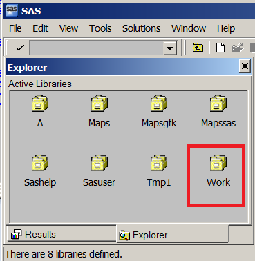
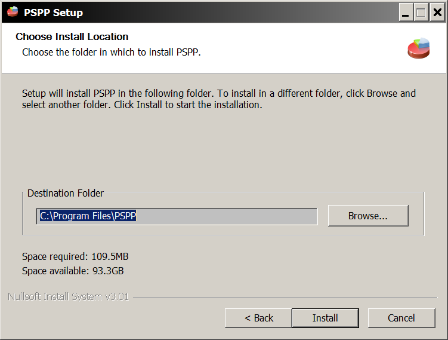
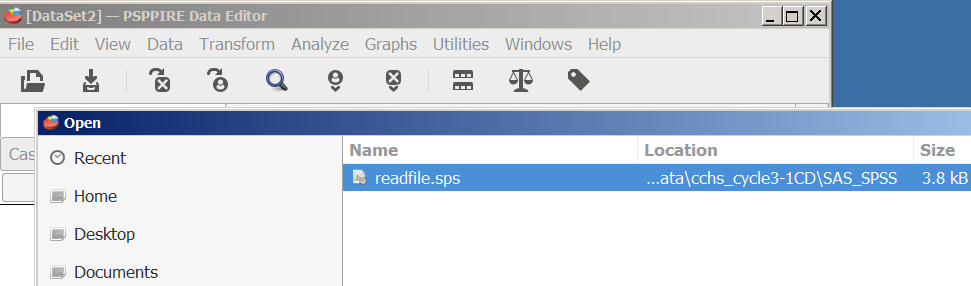

Importing CCHS to R
This section provides comprehensive instructions on how to import the Canadian Community Health Survey (CCHS) dataset from the UBC library site to the RStudio environment. The process starts with downloading the CCHS data from the UBC library site and includes step-by-step visual guides for each stage. Three primary options are provided to process and format the data:
- Using the commercial software SAS.
- Utilizing the free software PSPP, an alternative to SPSS.
- Directly processing the data in R.
For each option, users are guided on how to download, install, access, read, save, and check the dataset. The objective is to help users acquire, visualize, and manipulate the CCHS dataset seamlessly using various software applications.
Downloading CCHS data from UBC
- Step 1: Go to dvn.library.ubc.ca, and press ‘log-in’
- Step 2: Select ‘UBC’ from the dropdown menu

- Step 3: Enter your CWL or UBC library authentication information

- Step 4: Once you log-in, search the term ‘cchs’ in the search-box

- Step 5: For illustrative purposes, let us work with the Cycle 3.1 of the CCHS dataset from the list of results. In that case, type ‘cchs 3.1’
- Step 6: CCHS Cycle 3.1 information
- Step 7: Choose the ‘Data: CD’ from the menu

- Step 8: Download the entire data (about 159 MB) as a zip file

- Step 9: Accept the ‘terms of use’

-
Step 10: Select a directory to download the zip file. The path of the download directory is important (we need to use this
pathexactly later). For example, below we are in"C:\CCHS\"folder, but we will create a “Data” folder there, so that the download path is"C:\CCHS\Data\".


- Step 11: Extract the zip file

- Step 12: Be patient with the extraction
- Step 13: Once extraction is complete, take a look at the folders inside. You will see that there is a folder named ‘SAS_SPSS’

Reading and Formatting the data
Option 1: Processing data using SAS
SAS is a commercial software. You may be able to get access to educational version. In case you don’t have access to it, later we outline how to use free packages to read these datasets.
- Step 1: Inside that ‘SAS_SPSS’ folder, find the file hs_pfe.sas. It is a long file, but we are going to work on part of it. First thing we want to do it to change all the directory names to where you have unzipped the downloaded file (for example, here the zip file was extracted to C:/CCHS/Data/cchs_cycle3-1CD/). We only need the first part of the code (as shown below; only related to data ‘hs’). Delete the rest of the codes for now. The resulting code should like like this:
Show the code
%include "C:\CCHS\Data\cchs_cycle3-1CD\SAS_SPSS\Layouts\hs\hs_pfe.sas";
data hs;
%let datafid="C:\CCHS\Data\cchs_cycle3-1CD\Data\hs.txt";
%include "C:\CCHS\Data\cchs_cycle3-1CD\SAS_SPSS\Layouts\hs\hs_i.sas";
%include "C:\CCHS\Data\cchs_cycle3-1CD\SAS_SPSS\Layouts\hs\hs_fmt.sas";
%include "C:\CCHS\Data\cchs_cycle3-1CD\SAS_SPSS\Layouts\hs\hs_lbe.sas";
run;Once the modifications are done, submit the codes in SAS. Note that, the name of the data is ‘hs’.

- Step 2: Once you submit the code, you can check the log window in SAS to see how the code submission went. It should tell you how many observations and variables were read.

- Step 3: If you one to view the dataset, you can go to ‘Explorer’ window within SAS.

- Step 4: Generally, if you haven’t specified where to load the files, SAS will by default save the data into a library called ‘Work’

- Step 5: Open that folder, and you will be able to find the dataset ‘Hs’.

- Step 6: Right click on the data, and click ‘open’ to view the datafile.

- Step 7: To export the data into a CSV format data (so that we can read this data into other software packages), ckick ‘Menu’.

- Step 8: then press ‘Export Data’.

- Step 9: choose the library and the data.
- Step 10: choose the format in which you may want to save the existing data.
- Step 11: also specify where you want to save the csv file and the name of that file (e.g., cchs3.csv).

- Step 12: go to that directory to see the file cchs3.csv

- Step 13: If you want to save the file in SAS format, you can do so by writing the following sas code into the ‘Editor’ window. Here we are saving the data Hs within the Work library in to a data called cchs3 within the SASLib library. Note that, the directory name has to be where you want to save the output file.
Show the code
LIBNAME SASLib "C:\CCHS\Data";
DATA SASLib.cchs3;
set Work.Hs;
run;Submit these codes into SAS:
- Step 13: go to that directory to see the file cchs3.sas7dbat

Option 2: Processing data using PSPP (Free)
PSPP is a free package; alternative to commercial software SPSS. We can use the same SPSS codes to read the datafile into PSPP, and save.
- Step 1: Get the free PSPP software from the website: www.gnu.org/software/pspp/
PSPP is available for GNU/Hurd, GNU/Linux, Darwin (Mac OS X), OpenBSD, NetBSD, FreeBSD, and Windows
For windows, download appropriate version.

Download the file

Install


Click the icon shorcut after installing

- Step 2: Open PSPP

- Step 3: Go to ‘file’ menu and click ‘open’

- Step 4: Specify the readfile.sps file from the ‘SAS_SPSS’ folder.

You will see the following file:

- Step 5: Similar to before, change the directories as appropriate. Get rid of the extra lines of codes. Resulting codes are as follows (you can copy and replace the code in the file with the following codes):
Show the code
file handle infile/name = 'C:\CCHS\Data\cchs_cycle3-1CD\DATA\hs.txt'.
data list file = infile notable/.
include file = "C:\CCHS\Data\cchs_cycle3-1CD\SAS_SPSS\Layouts\hs\hs_i.sps".
include file = "C:\CCHS\Data\cchs_cycle3-1CD\SAS_SPSS\Layouts\hs\hsvale.sps".
include file = "C:\CCHS\Data\cchs_cycle3-1CD\SAS_SPSS\Layouts\hs\hsvare.sps".
include file = "C:\CCHS\Data\cchs_cycle3-1CD\SAS_SPSS\Layouts\hs\hsmiss.sps".
execute.For Mac users, it should be as follows (e.g., username should be your user name, if you are saving under the path "/Users/username/CCHS/Data/"):
Show the code
file handle infile/name ="/Users/username/CCHS/Data/cchs_cycle3-1CD/Data/hs.txt".
data list file = infile notable/.
include file = "/Users/username/CCHS/Data/cchs_cycle3-1CD/SAS_SPSS/Layouts/hs/hs_i.sps".
include file = "/Users/username/CCHS/Data/cchs_cycle3-1CD/SAS_SPSS/Layouts/hs/hsvale.sps".
include file = "/Users/username/CCHS/Data/cchs_cycle3-1CD/SAS_SPSS/Layouts/hs/hsvare.sps".
include file = "/Users/username/CCHS/Data/cchs_cycle3-1CD/SAS_SPSS/Layouts/hs/hsmiss.sps".
execute.- Step 6: Run the codes.

- Step 7: This is a large data, and will take some time to load the data into the PSPP data editor. Be patient.

Once loading is complete, it will show the ‘output’ and ‘data view’.


Note that, you will get error message, if your files were not in the correct path. In our example, the path was "C:\CCHS\Data\" for the zip file content (see the previous steps).
- Step 7: You can also check the ‘variable view’.

- Step 8: Save the data by clicking ‘File’ and then ‘save as …’

- Step 9: Specify the name of the datafile and the location / folder to save the data file.

- Step 10: See the SAV file saved in the directory.

- Step 11: To save CSV format data, use the following syntax.
Show the code
SAVE TRANSLATE
/OUTFILE="C:/CCHS/Data/cchs3b.csv"
/TYPE=CSV
/FIELDNAMES
/CELLS=VALUES.Note that, for categorical data, you can either save values or labels. For our purpose, we prefer values, and hence saved with values here.
- Step 12: See the CSV file saved in the directory extracted from PSPP.

Option 3: Processing data using SPSS
Log into ubc.onthehub.com to download SPSS. With your CWL account, UBC students should be able to download it. UBC IT website for SPSS says:
The SPSS software license with UBC specifies that SPSS must only be used by UBC Faculty, Students, and Research Staff and only for Teaching and non-commercial Research purposes related to UBC.
Both network (for UBC owened devices) or standalone / home versions (for non-UBC owened devices) should be available. Once downloaded, same process of importing CCHS data in PSPP can also be applied on SPSS (same syntax files should work). Let me know if that is not the case.
Processing data in R
Download software
- Step 1: Download either ‘R’ from CRAN www.r-project.org or ‘R open’ from Microsoft mran.microsoft.com/open


- Step 2: Download RStudio from www.rstudio.com/
- Step 3: Open RStudio

Import, export and load data into R
- Step 1: Set working directory
Show the code
setwd("C:/CCHS/Data/") # or something appropriate- Step 2: Read the dataset created from PSPP with cell values. We can also do a small check to see if the cell values are visible. For example, we choose a variable ‘CCCE_05A’, and tabulate it.

-
Step 3: Save the RData file from R into a folder
SurveyData:
Show the code
save(Hs, file = "SurveyData/cchs3.RData")- Step 4: See the RData file saved in the directory extracted from R.
- Step 5: Close R / RStudio and restart it. Environment window within RStudio should be empty.

- Step 6: Load the saved RData into R. Environment window within RStudio should have ‘Hs’ dataset.
Show the code
load("SurveyData/cchs3.RData")